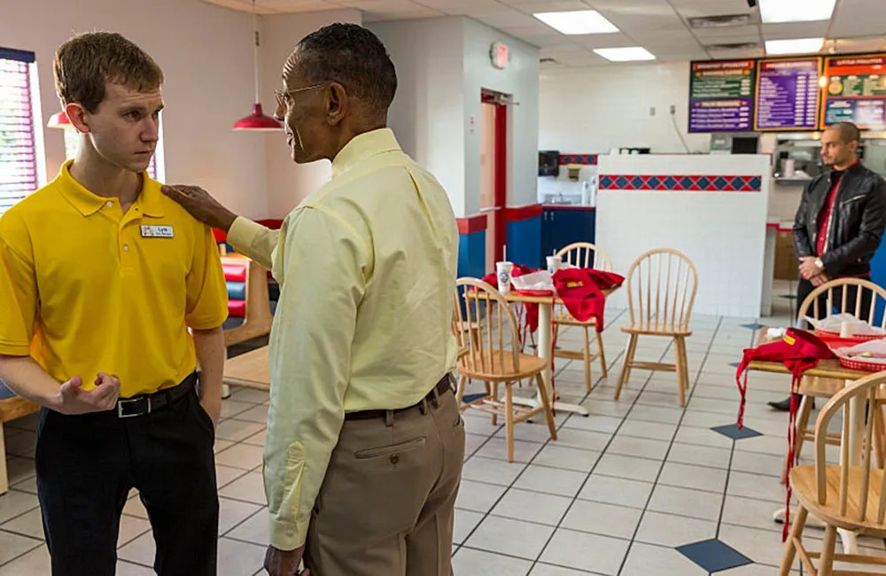
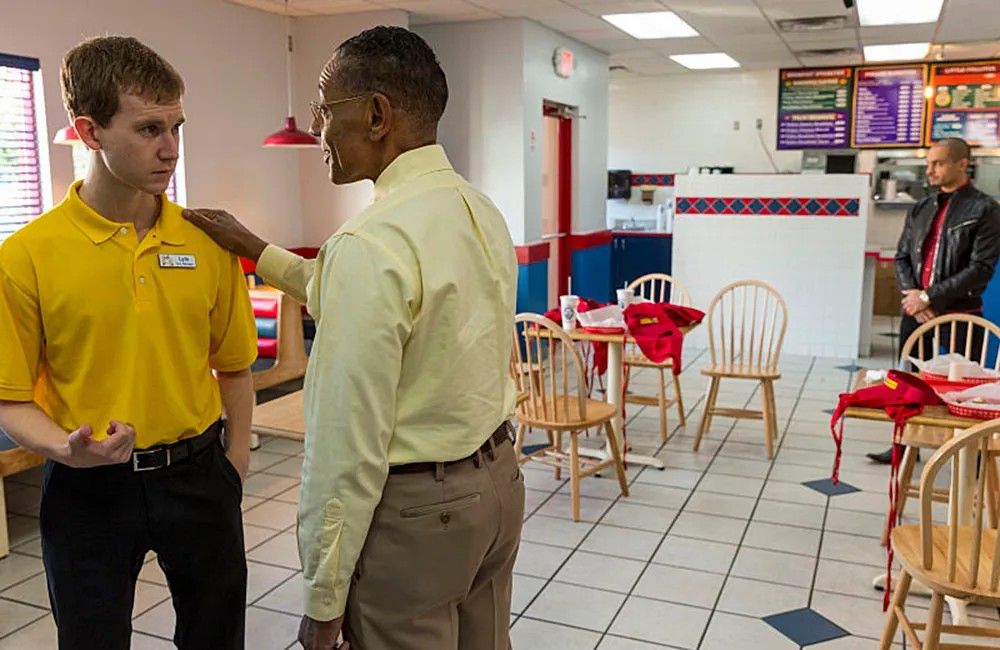

The Los Pollos Hermanos Story
Once a simple idea between two men as close as brothers, businessman Gustavo Fring and chef Maximino Arciniega sought to bring a delicious dream to life by opening a hole-in-the-wall fried chicken joint in Chile. The "Chicken Brothers," as they were known, didn't realize how big their little shop would become. Before they knew it, after raving success and thousands of customers every week, Gus and Max found that the restaurant had already bloomed into a finger-licking franchise that flew from place to place, eventually finding a nest in Albuquerque, New Mexico. With 14 locations roosting from the Land of Enchantment to Nevada, Los Pollos Hermanos combines that savory, spicy southwestern flavor you know and love with tender, farm-fresh chicken, delivered straight from our coops to your basket via our state-of-the-art cooling trucks. Slow-cooked to perfection, Los Pollos Hermanos is always trying to find something new for its loyal and valued customers to sink their teeth into. Serving lunch, dinner, snacks and sides, and catering for most events, Los Pollos Hermanos is still plucking strong. Come to Los Pollos Hermanos, where something delicious is always cooking.

 
